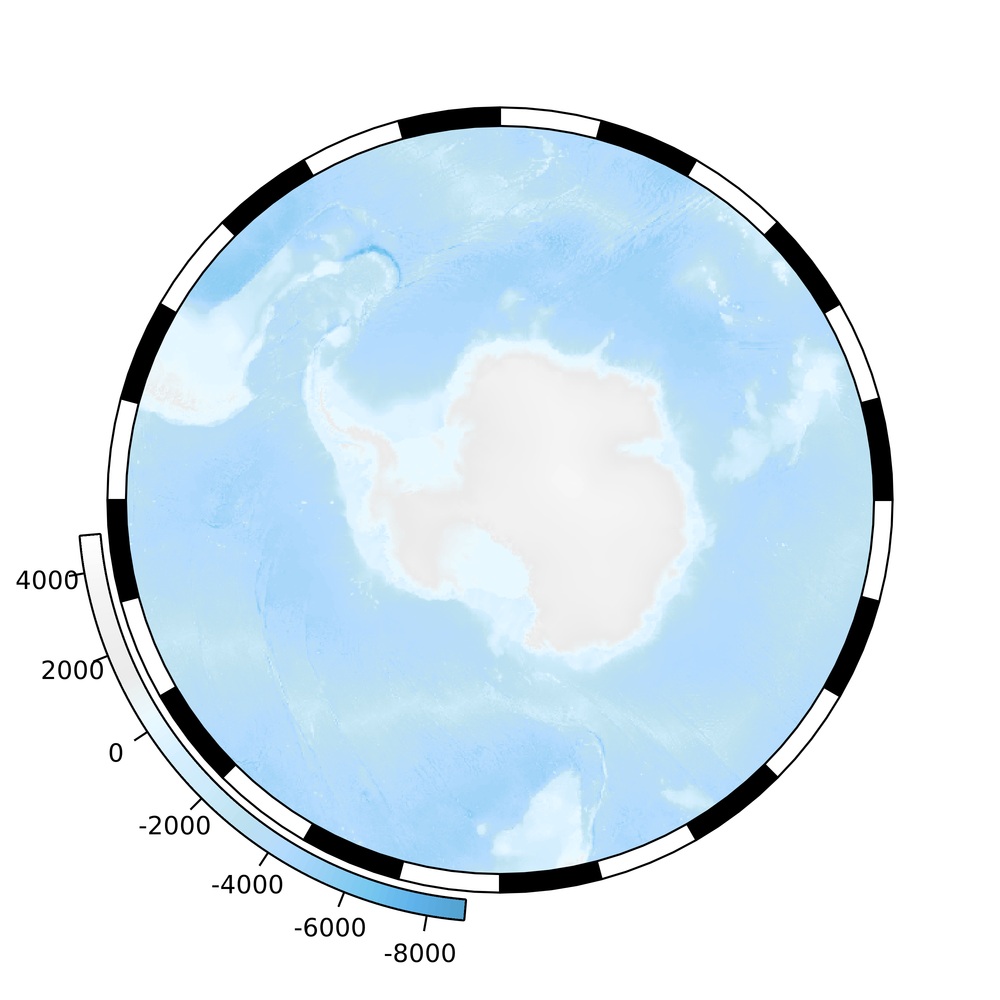
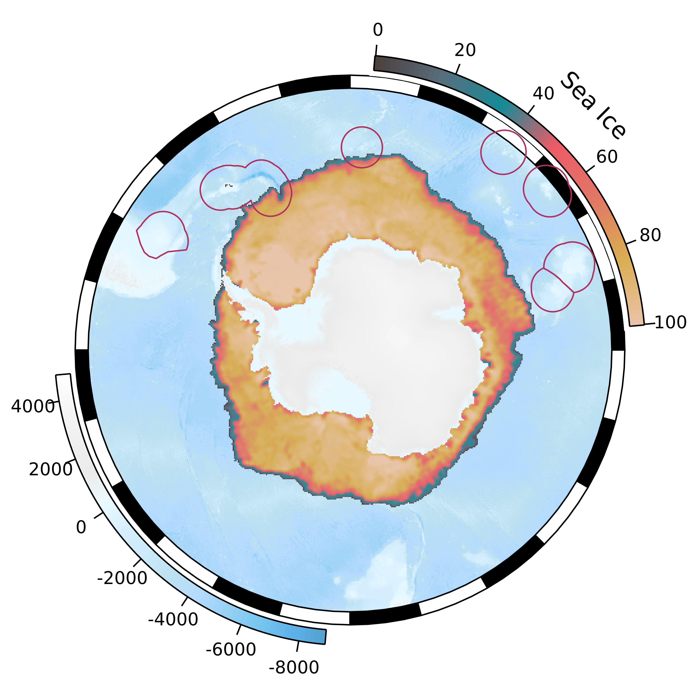
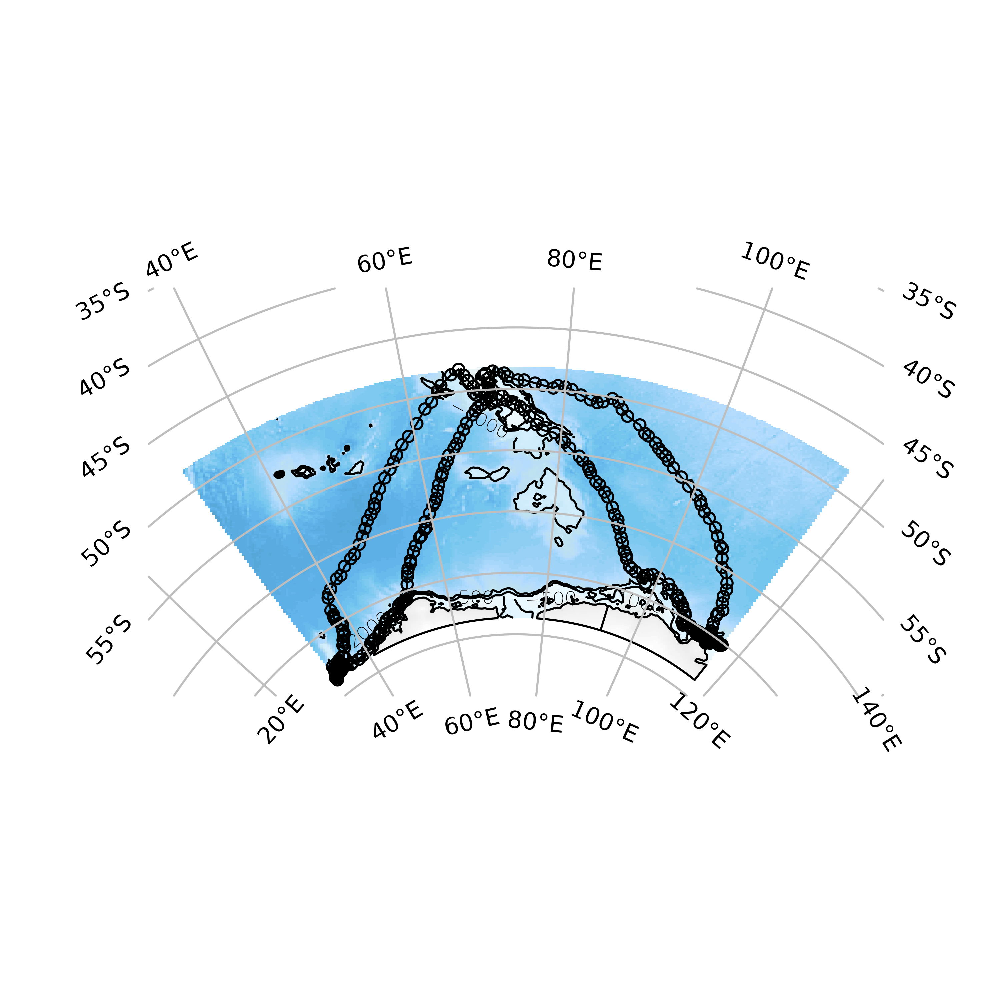
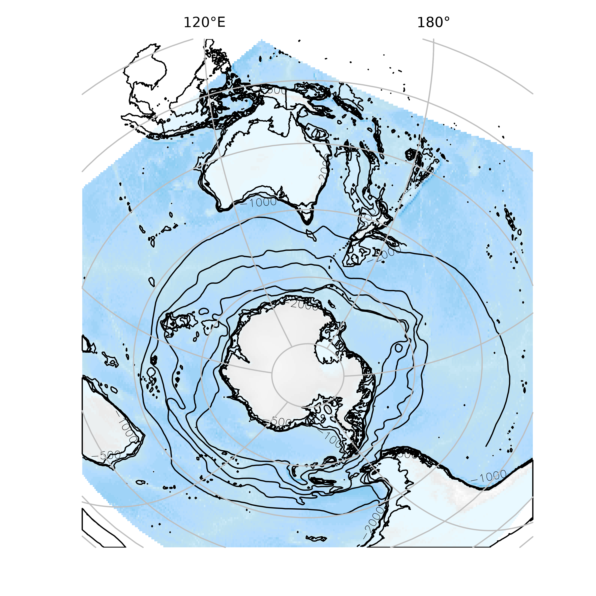

The goal of SOmap is to make publication quality round Southern Ocean maps in polar projections with little effort. This package is still very much a work in progress contact me with any questions or suggestions.
Installation
The development version from GitHub with:
Example
To make a simple map you can use the following function; use ?SOmap to see all the options for modifying layers.

There is also SOmanagement() which have management layers for the Southern Ocean and SOleg() which gives custom rounded legends for added map layers
## custom colours
spiritedMedium <- grDevices::colorRampPalette(c("#4D4140", "#596F7E", "#168B98", "#ED5B67", "#E27766", "#DAAD50", "#EAC3A6"))
spirited <- spiritedMedium(80)
SOmap::SOmap()
SOleg(position = "topright",
col = spirited,
ticks = 6,
tlabs = c("0","20","40","60","80","100"),
Trim = -45,
label = "Sea Ice")
plot(ice, col = spirited, add=TRUE, legend = FALSE, alpha = 0.95) ## From raadtools
SOmanagement(EEZ = TRUE)
An automatic plot function SOauto_map() will take any data in the form of longitude and latitude vectors and create a guess at a map. It returns the data used to make the map so that further customization can be made.
ellie <- SOmap_data$mirounga_leonina
track <- head(do.call(rbind, lapply(split(ellie, ellie$id), function(x) rbind(as.matrix(x[c("lon", "lat")], NA)))),-1)
SOauto_map(track[,1], track[,2])
graphics.off()
data("albatross", package = "adehabitatLT")
albatrack <- rgdal::project(as.matrix(purrr::map_df(albatross, ~rbind(.x[c("x", "y")], NA))), "+proj=utm +zone=42 +south +datum=WGS84", inv = TRUE)
ellie_map <- SOauto_map(albatrack[,1], albatrack[,2])Notice how we may use the plot interactively or also return the data for further exploration.
Objects from sf or sp may also be used. (If a ‘raster’ is given it is used only for its extent. )

Please note that the ‘SOmap’ project is released with a Contributor Code of Conduct. By contributing to this project, you agree to abide by its terms.